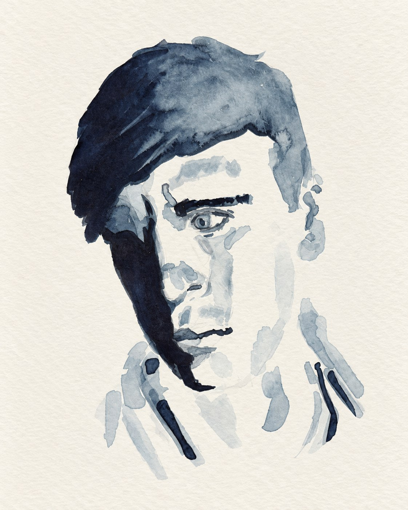

This site gathers the paintings, music, and writing of Zakk Ziegler, kept here for family and friends to revisit.
Zakk’s creative output was as varied as it was prolific – paintings, sculptural pieces, photography, self-recorded music, and writing. Self-taught in nearly all of it, he was driven simply by a restless curiosity and a love of making things. Above all, he was a devoted father to his son, Lucien. Read Zakk’s full obituary →
Explore his work
The family has started a fund to support the care and needs of Lucien, who was the brightest light in his life. To learn more about this, please email his aunt Kim at kprendergast01@gmail.com. All proceeds from the sale of Zakk’s artwork go to Lucien.
